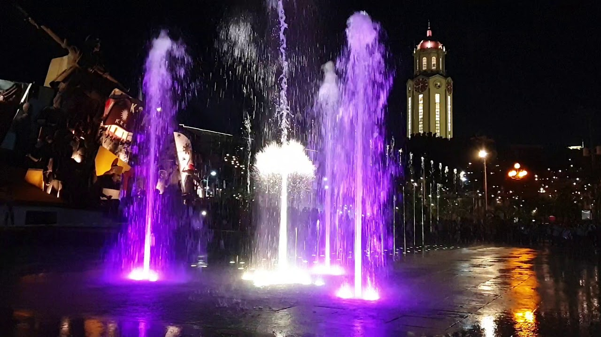

Visiting the monument is an excellent way to learn about Philippine history and gain a deeper appreciation for the country's struggle for independence. The monument's bronze statue of Andres Bonifacio and its relief sculptures depicting significant events in Philippine history serve as a powerful reminder of the country's past and the sacrifices made by its people. In addition, the monument is located near other historical sites in the area, such as the Barasoain Church and the Emilio Aguinaldo Shrine. Visitors can combine a visit to the monument with trips to these other sites to gain a more comprehensive understanding of Philippine history. Overall, the Bonifacio and Katipunan Revolution Monument is an important tourist spot in Manila that provides visitors with an opportunity to learn about Philippine history and culture and gain a deeper appreciation for the country's struggle for independence.
Historical Significance: The monument commemorates the significant contributions of Andres Bonifacio and the Katipunan in leading the Philippine Revolution against Spanish colonial rule. It is a symbol of the country's struggle for independence, making it an important site for anyone interested in Philippine history and culture.
Cultural Importance: The monument represents the bravery and courage of the Filipino people in their fight for freedom and self-determination. It is a testament to the country's national identity and cultural heritage, making it an important site for anyone interested in Philippine culture.
Educational Value: Visitors to the monument can learn about Philippine history and gain a deeper understanding of the country's struggle for independence. The monument's various sculptures and symbols provide an opportunity to explore the country's past and present, making it a valuable educational resource.
Symbolic Meaning: The monument serves as a powerful symbol of the Filipino people's determination to overcome oppression and fight for their rights. It is a reminder of the importance of self-determination, making it an important site for anyone interested in social justice and human rights.
Overall, the Bonifacio and Katipunan Revolution Monument is an essential site for anyone interested in Philippine history, culture, and social justice. It provides a valuable opportunity to learn about the country's past and present, and serves as a powerful symbol of the Filipino people's determination to fight for their rights and freedoms.
Overall, Arroceros Forest Park is a hidden gem in Manila that is worth visiting for its biodiversity, educational programs, and historical significance.